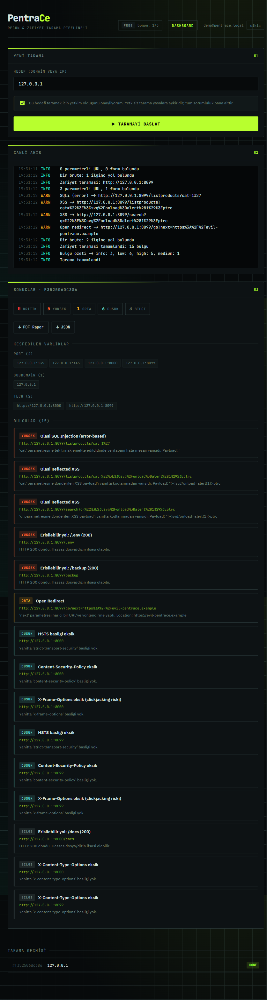

Bir domain ya da IP gir; PentraCe keşfi, port taramasını, teknoloji tespitini ve
aktif zafiyet taramasını otomatik yapar — canlı dashboard ve PDF rapor ile.
Kurulumsuz tek .exe, sunucusuz, tamamen senin makinende.

Subdomain keşfi (crt.sh + wordlist), asyncio port tarama, HTTP başlık & teknoloji parmak izi.
SQL injection, XSS, open redirect, dizin bruteforce, SSRF ve eksik güvenlik başlıkları.
Server-Sent Events ile anlık tarama logları, severity grafiği ve bulgu kartları.
Bulguları önem derecesine göre skorla, tek tıkla PDF veya JSON olarak dışa aktar.
Taramalar kendi makinenden çıkar; veriler %APPDATA%\PentraCe'de kalır, dışarı çıkmaz.
Hesap, plan, kota, ödeme yok. İndir ve istediğin kadar tara.
Releases'ten PentraCe.exe'yi indir, çift tıkla. Kurulum sihirbazı yok.
Yetkili olduğun bir domain/IP yaz, izin kutusunu işaretle, taramayı başlat.
Canlı sonuçları izle, bulguları incele, PDF/JSON raporu indir.